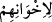
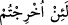

15. (Onların durumu) kendilerinden az önce geçmiş ve yaptıklarının cezâsını
tatmış olanların durumu gibidir. Onlara acıklı bir azap vardır.
16. Münâfıkların durumu tıpkı şeytanın durumu gibidir. Çünkü şeytan insana
“İnkâr et” der. İnsan inkâr edince de: Ben senden uzağım, çünkü ben âlemlerin
Rabbi olan Allah’tan korkarım, der.
17. Nihâyet ikisinin de sonu, içinde ebedî kalacakları ateş olacaktır. İşte bu,
zâlimlerin cezâsıdır.
“Münâfıkların, kitab ehlinden inkâr eden dostlarına: Eğer siz yurdunuzdan
çıkarılırsanız, mutlak biz de sizinle beraber çıkarız; sizin aleyhinizde kimseye asla
uymayız.” Bu âyet-i kerime, münâfıklarla inkârcılar arasında geçen yalan dolan
sözlerden ve bozuk ve çirkin hallerden dolayı duyulan hayreti açıklamak için gelmiş
başlangıç cümlesidir. Âyet-i kerimede geçen nifak edenler, Medine halkından olan
münâfıklardır.
Râğıb demiştir ki: Nefak kelimesi geçilen açık yol, tünel anlamına gelir. Arab tavşanı
denilen yaban faresinin ini için kullanılan “nufekau’l-yebû’” buradan alınmıştır.
Nafeka’l-yerbû’ ifâdesi “yaban faresi iki yüzlü olan inine girdi” demektir. Bu köklerden
alınan nifak, “dinin bir kapısından girip diğerinden çıkmak” demektir. “Münâfıklar
fâsıkların ta kendileridir” (et-Tevbe, 9/67) âyeti bu mânâya dikkat çekmiştir. Yâni
“onlar şeriattan çıkmışlardır” demektir.
Âyetteki,
/li-ihvâninihim kelimesindeki lam tebliğ içindir. Dostlarından
maksad da Nadiroğullarıdır, Onların dostluklarından ve kardeşliklerinden maksad ise,
ya inkâr ve küfürde birleşmeleridir. Çünkü küfürdekiler bir tek millettir, yahut
aralarındaki dostluklarıdır.
/Le in uhrictum, kelimesinin başındaki lâm da kasem içindir. Bu, yemin
gerçekleştikten sonra şart harfinin başına geçip veya açık olarak gelip cevâbın şart için
değil, kasemin cevabı olduğunu bildiren yemin lamıdır. Bazan şart harfinin dışında da
gelir.
Mânâ şöyle olur: “Ey hitâb edilen kimse! Medineli münâfıkların, inkâr eden kitab ehli
dostlarına: Eğer siz yurdunuzdan ve köylerinizden çıkarılırsanız, Muhammed (s.a.) ve
arkadaşları sizi çıkarırlarsa, mutlaka biz de sizinle çıkar ve aramızdaki muhabbet ve
dostluğumuzun tam olmasından dolayı gittiğiniz yere beraberinizde gideriz, dediklerini
görmedin mi?” Bu kısım yeminin cevabıdır. Şartın cevabı gizlidir. Çünkü şart ve
yeminin cevapları benzeşince, kasem cevabı ile yetinilmiş ve şartın cevabı gizlenmiştir.
Bu âyetten sonra gelmekte olan âyet-i kerimede geçen “onlarla beraber çıkmazlar” ve
“onlara yardım etmezler” cümleleri de bunun gibi yemine cevaptır. Bu sebeple fiiller
merfû olarak gelmiş olup meczum değillerdir. Yeminin cevabının kendisine delâlet
etmesi sebebiyle şartın cevabı hazfedilmiştir. Ebeden kelimesi zarf olarak mensup olup